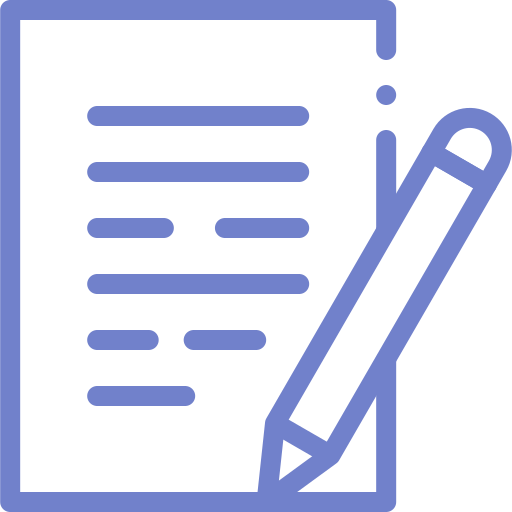

 Descubra seu Equilíbrio Digital
Responda às perguntas abaixo para entender melhor como você usa as telas no dia a dia e descubra dicas para melhorar seu equilíbrio digital
Responda às perguntas abaixo para entender melhor como você usa as telas no dia a dia e descubra dicas para melhorar seu equilíbrio digital
No Brasil, muitos adolescentes passam mais de 7 horas por dia conectados fora do ambiente escolar, seja em redes sociais, jogos, vídeos ou aplicativos de mensagens. Esse tempo excessivo diante das telas pode impactar diversos aspectos da vida, como a qualidade do sono, a concentração nos estudos e até o bem-estar emocional. Por outro lado, a tecnologia também oferece oportunidades de aprendizado, comunicação e entretenimento.